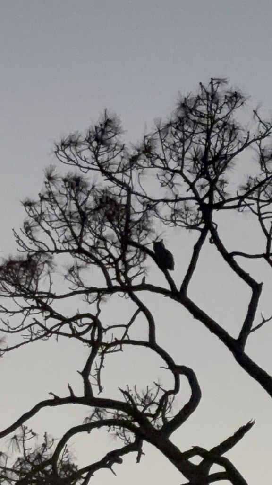

- Look down before you look up. Beneath a roost you will find pellets - tight grey packages of fur and bone. An owl swallows prey whole and coughs the indigestible parts back up hours later, so these are leftovers rather than droppings. The sidewalk near the pavilion collects them, and if you raise your eyes into the royal palms above, you may find the nest that produced them.
- The deep, resonant 'hoo-hoo-hoooo hoo-hoo' at dusk is the great horned owl — the most powerful owl in North America.
- Its grip strength is estimated at about 300 pounds per square inch — enough to crush prey instantly and strong enough that it routinely takes skunks, which most predators avoid.
- The feathered 'horns' are not ears — they are tufts used for communication and camouflage. The real ears are hidden openings on the sides of the head, offset so the owl can pinpoint sound in three dimensions.
- It nests earlier than almost any bird — eggs often laid in January, with young in the nest while winter is still underway.
Large — about 22 inches tall with a 4-foot wingspan.
Prominent feathered 'horns' on the head.
Large, forward-facing, bright yellow.
Deep, resonant 'hoo-hoo-hoooo hoo-hoo' — the classic owl hoot.
A deep, resonant hooting: 'hoo-hoo-hoooo hoo-hoo.' Also hisses and bill-clacks when disturbed.
A large, bulky owl with ear tufts, most often detected by its deep hooting at dusk or dawn. Daytime sightings are rare — look for a large shape pressed against a tree trunk.
Mammals, birds, reptiles — including skunks, rabbits, hawks, and other owls. One of the least picky predators.
Listen at dusk for the hooting. Scan large tree trunks for a roosting shape during the day.
Year-round resident, but nocturnal — most likely heard at dusk or early morning.
Observe and enjoy.

- © catalaniclaire (CC-BY-NC), via iNaturalist
- © Rob Carr (CC-BY-NC), via iNaturalist